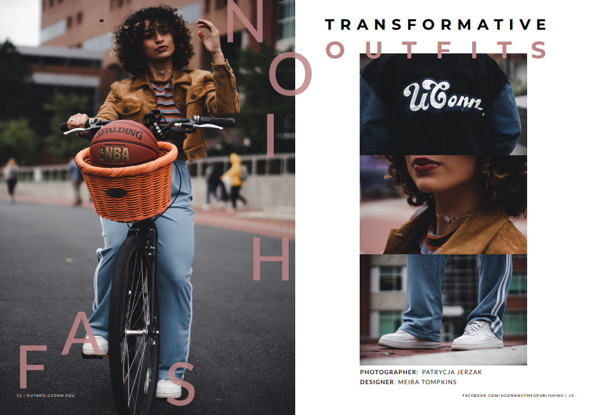
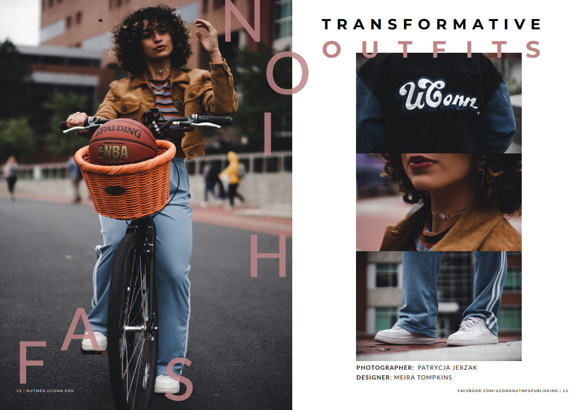
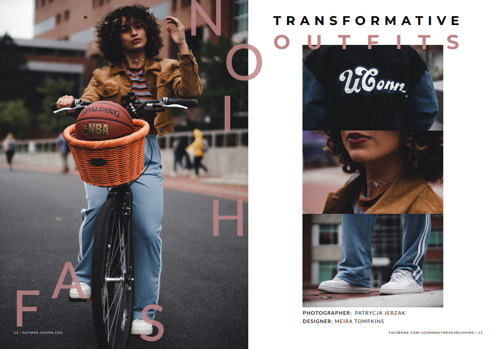

Personal Role: Undergraduate Student Government Graphic Designer
For the Fall 2019 semester, I had the opprotunity to create a magazine for UConn Nutmeg Publishing. I was in charge of everything from the content to the final designs and proofs. This health and wellness piece included a collaboration with UConn Project Fashion, our feature piece, as well as pieces on the topic of food insecurity and renovations to Whitney dining hall. A sleek and simple design was used to attract the readers attention and highlight photographs chosen.
